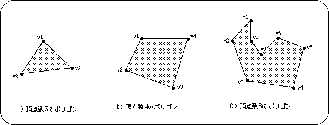
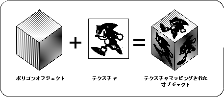

Return to menu | Go to next page
This chapter explains the basic knowledge required to create 3D graphic data for Sega Saturn and the basic operation of SOFTIMAGE
In Sega Saturn, 3D models are represented by a combination of planes called “polygons”. Polygon is generally
“A plane that has three or more vertices and is surrounded by a straight line connecting the vertices”
Is defined by
In the text, the sides of the polygon are called "edges".

Note) ● indicates vertices, and the straight line between vertices indicates the edge.
Sega Saturn only supports polygons with 4 vertices. For this reason, polygons with 3 or 5 vertices cannot be represented. However, by setting two vertices of the four vertices to the same coordinate, a polygon with three vertices can be drawn.
Putting two-dimensional graphics on the surface of a polygon is called “texture mapping”, and the graphics that are put in is called “texture”.
With regular polygons, the texture and pattern of the material cannot be expressed using only the surface color, but by using the texture mapping function, the surface of the 3D object represented by the polygon can be given a more realistic 3D representation. I can.
